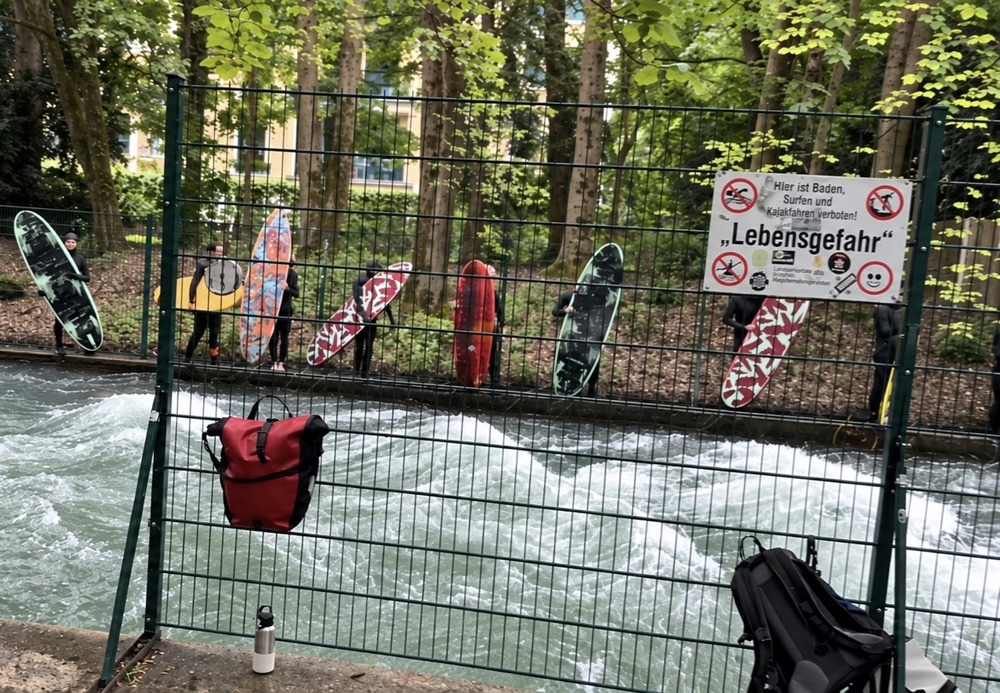

Munich, 2024
Surfers gather beside the fast-flowing Eisbach wave in Munich, photographed in 2024. Surfboards lean against the fence beneath a prominent “Lebensgefahr” warning sign.

Surfers gather beside the fast-flowing Eisbach wave in Munich, photographed in 2024. Surfboards lean against the fence beneath a prominent “Lebensgefahr” warning sign.